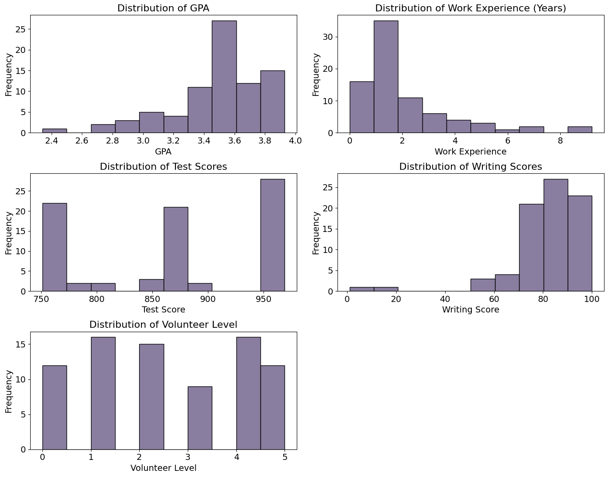
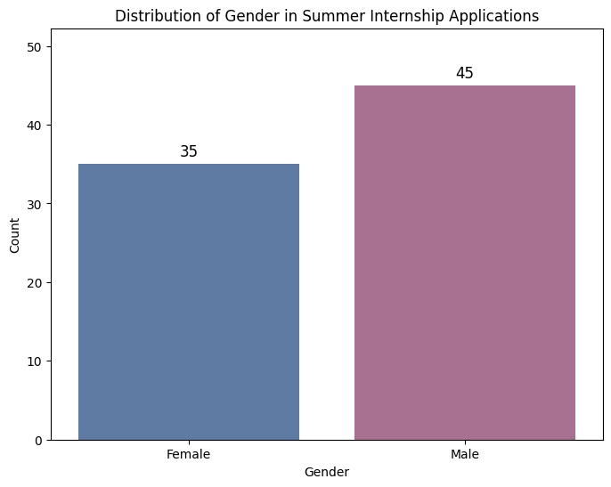
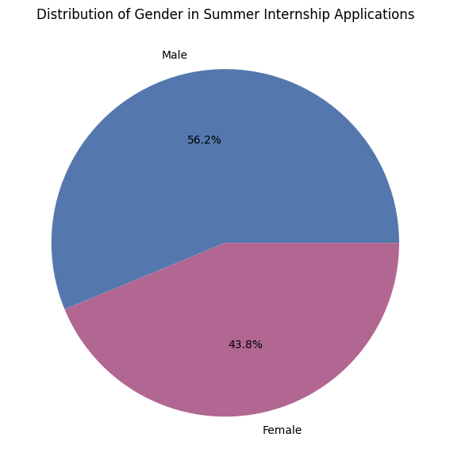

# Import packages
import pandas as pd
import numpy as np
import altair as alt
import matplotlib.pyplot as plt
import seaborn as sns
import plotly.graph_objects as go
import plotly.express as px
from mpl_toolkits.mplot3d import Axes3D
from vega_datasets import dataReading in the data and loading packages
# Read in clean data
df = pd.read_csv("../data/clean_data.csv")
df.head()| Decision | State | GPA | WorkExp | TestScore | WritingScore | Gender | VolunteerLevel | |
|---|---|---|---|---|---|---|---|---|
| 0 | Waitlist | Alabama | 3.41 | 1.2 | 868 | 85 | 0 | 0 |
| 1 | Admit | California | 3.90 | 6.7 | 962 | 100 | 1 | 0 |
| 2 | Admit | California | 3.88 | 1.5 | 967 | 95 | 1 | 5 |
| 3 | Admit | California | 3.70 | 1.2 | 969 | 94 | 1 | 2 |
| 4 | Admit | California | 3.70 | 1.4 | 966 | 94 | 1 | 0 |
EDA Visuals
admitted_df = df[df["Decision"] == "Admit"]
def middle50(data, colname):
lower_quantile = data[colname].quantile(0.25)
upper_quantile = data[colname].quantile(0.75)
return lower_quantile, upper_quantile
print("GPA Middle 50%:", middle50(admitted_df, "GPA"))
print("WorkExp Middle 50%:", middle50(admitted_df, "WorkExp"))
print("TestScore Middle 50%:", middle50(admitted_df, "TestScore"))
print("WritingScore Middle 50%:", middle50(admitted_df, "WritingScore"))
print("Volunteer Level Middle 50%:", middle50(admitted_df, "VolunteerLevel"))GPA Middle 50%: (3.66, 3.87)
WorkExp Middle 50%: (1.0, 2.2)
TestScore Middle 50%: (965.0, 969.0)
WritingScore Middle 50%: (91.0, 97.0)
Volunteer Level Middle 50%: (1.0, 4.0)print(admitted_df[admitted_df["Gender"] == 0].shape[0]/29*100)
print(admitted_df[admitted_df["Gender"] == 1].shape[0]/29*100)44.827586206896555
55.172413793103445print(df["GPA"].mean())
print(df["WorkExp"].mean())
print(df["TestScore"].mean())
print(df["WritingScore"].mean())
print(df["VolunteerLevel"].mean())
print("------")
print(df["GPA"].median())
print(df["WorkExp"].median())
print(df["TestScore"].median())
print(df["WritingScore"].median())
print(df["VolunteerLevel"].median())
print("------")
print(df["GPA"].max())
print(df["WorkExp"].max())
print(df["TestScore"].max())
print(df["WritingScore"].max())
print(df["VolunteerLevel"].max())
print("------")
print(df["GPA"].min())
print(df["WorkExp"].min())
print(df["TestScore"].min())
print(df["WritingScore"].min())
print(df["VolunteerLevel"].min())3.4965
2.1475
870.0875
81.6125
2.4625
------
3.54
1.55
868.0
83.5
2.0
------
3.93
9.2
969
100
5
------
2.34
0.0
751
1
0# Histograms of columns to double check for outliers
fig, axes = plt.subplots(3, 2, figsize = (14,11))
sns.histplot(data = df, x = "GPA", bins = 10, kde = False, color = "#635380", edgecolor = "black", ax = axes[0, 0])
axes[0, 0].set_title("Distribution of GPA", fontsize = 16)
axes[0, 0].tick_params(axis = "both", labelsize = 14)
axes[0, 0].set_xlabel("GPA", fontsize = 14)
axes[0, 0].set_ylabel("Frequency", fontsize = 14)
sns.histplot(data = df, x = "WorkExp", bins = 10, kde = False, color = "#635380", edgecolor = "black", ax = axes[0, 1])
axes[0, 1].set_title("Distribution of Work Experience (Years)", fontsize = 16)
axes[0, 1].tick_params(axis = "both", labelsize = 14)
axes[0, 1].set_xlabel("Work Experience", fontsize = 14)
axes[0, 1].set_ylabel("Frequency", fontsize = 14)
sns.histplot(data = df, x = "TestScore", bins = 10, kde = False, color = "#635380", edgecolor = "black", ax = axes[1, 0])
axes[1, 0].set_title("Distribution of Test Scores", fontsize = 16)
axes[1, 0].tick_params(axis = "both", labelsize = 14)
axes[1, 0].set_xlabel("Test Score", fontsize = 14)
axes[1, 0].set_ylabel("Frequency", fontsize = 14)
sns.histplot(data = df, x = "WritingScore", bins = 10, kde = False, color = "#635380", edgecolor = "black", ax = axes[1, 1])
axes[1, 1].set_title("Distribution of Writing Scores", fontsize = 16)
axes[1, 1].tick_params(axis = "both", labelsize = 14)
axes[1, 1].set_xlabel("Writing Score", fontsize = 14)
axes[1, 1].set_ylabel("Frequency", fontsize = 14)
sns.histplot(data = df, x = "VolunteerLevel", bins = 10, kde = False, color = "#635380", edgecolor = "black", ax = axes[2, 0])
axes[2, 0].set_title("Distribution of Volunteer Level", fontsize = 16)
axes[2, 0].tick_params(axis = "both", labelsize = 14)
axes[2, 0].set_xlabel("Volunteer Level", fontsize = 14)
axes[2, 0].set_ylabel("Frequency", fontsize = 14)
fig.delaxes(axes[2, 1])
plt.tight_layout()
plt.show()
fig.savefig("../website/images/variable_histograms.png")
Investigating gender ratios
# Bar Chart of Gender Distribution
df["Gender"] = df["Gender"].replace({0: "Female"})
df["Gender"] = df["Gender"].replace({1: "Male"})
fig, ax = plt.subplots(figsize = (8, 6))
ax = sns.countplot(x = "Gender", data = df, palette = ["#5478AE", "#B16792"])
for p in ax.patches:
ax.annotate(f'{int(p.get_height())}', (p.get_x() + p.get_width() / 2., p.get_height()),
ha = "center", va = "center", xytext = (0, 10), textcoords = "offset points", fontsize = 12, color = "black")
ax.set_ylim(0, ax.get_ylim()[1] + 5)
plt.title("Distribution of Gender in Summer Internship Applications")
plt.xlabel("Gender")
plt.ylabel("Count")
plt.show()
fig.savefig("../website/images/gender_applications_barplot.png")/var/folders/_p/d81k_b_93575z7h2220jh4cr0000gn/T/ipykernel_16441/1875275667.py:6: FutureWarning:
Passing `palette` without assigning `hue` is deprecated and will be removed in v0.14.0. Assign the `x` variable to `hue` and set `legend=False` for the same effect.

# Pie Chart of Gender Distribution
gender_counts = df['Gender'].value_counts()
gender_counts = pd.DataFrame(gender_counts).reset_index()
gender_counts.columns = ["Gender", "Count"]
gender_counts['Percentage'] = gender_counts['Count'] / gender_counts['Count'].sum()
fig, ax = plt.subplots(figsize = (6, 6))
ax.pie(gender_counts["Percentage"], labels = gender_counts["Gender"], autopct = '%.1f%%', colors = ["#5478AE", "#B16792"])
ax.set_title("Distribution of Gender in Summer Internship Applications")
plt.tight_layout()
plt.show()
fig.savefig("../website/images/gender_applications_piechart.png")
gender_counts_by_state_reject| Gender | State | count | |
|---|---|---|---|
| 0 | Female | Florida | 12 |
| 1 | Female | Colorado | 5 |
| 2 | Female | Utah | 2 |
| 3 | Female | Virginia | 2 |
| 4 | Female | Alabama | 1 |
| 5 | Male | Florida | 12 |
| 6 | Male | Colorado | 5 |
| 7 | Male | California | 3 |
| 8 | Male | Utah | 3 |
| 9 | Male | Virginia | 2 |
| 10 | Male | Mississippi | 1 |
| 11 | Male | New York | 1 |
| 12 | Male | Oregon | 1 |
| 13 | Male | Vermont | 1 |
## PREPPING DATA FOR VISUALS
gender_counts_by_state_all = df.groupby("Gender")["State"].value_counts().reset_index()
females_all = gender_counts_by_state_all[gender_counts_by_state_all["Gender"] == "Female"]
males_all = gender_counts_by_state_all[gender_counts_by_state_all["Gender"] == "Male"]
gender_counts_by_state_admitted = df[df["Decision"] == "Admit"].groupby("Gender")["State"].value_counts().reset_index()
females_admit = gender_counts_by_state_admitted[gender_counts_by_state_admitted["Gender"] == "Female"]
males_admit = gender_counts_by_state_admitted[gender_counts_by_state_admitted["Gender"] == "Male"]
gender_counts_by_state_reject = df[df["Decision"] != "Admit"].groupby("Gender")["State"].value_counts().reset_index()
females_reject = gender_counts_by_state_reject[gender_counts_by_state_reject["Gender"] == "Female"]
males_reject = gender_counts_by_state_reject[gender_counts_by_state_reject["Gender"] == "Male"]
all_states_male = pd.DataFrame({"State": df.State.unique(), "count": 0, "Gender": "Male"})
all_states_female = pd.DataFrame({"State": df.State.unique(), "count": 0, "Gender": "Female"})
males_all = pd.merge(all_states_male, males_all, on = "State", how = "left").fillna(0)
males_all = males_all[["State", "count_y", "Gender_x"]]
males_all.columns = ["State", "count", "Gender"]
males_all["count"] = males_all["count"].astype(int)
females_all = pd.merge(all_states_female, females_all, on = "State", how = "left").fillna(0)
females_all = females_all[["State", "count_y", "Gender_x"]]
females_all.columns = ["State", "count", "Gender"]
females_all["count"] = females_all["count"].astype(int)
males_admit = pd.merge(all_states_male, males_admit, on = "State", how = "left").fillna(0)
males_admit = males_admit[["State", "count_y", "Gender_x"]]
males_admit.columns = ["State", "count", "Gender"]
males_admit["count"] = males_admit["count"].astype(int)
males_reject = pd.merge(all_states_male, males_reject, on = "State", how = "left").fillna(0)
males_reject = males_reject[["State", "count_y", "Gender_x"]]
males_reject.columns = ["State", "count", "Gender"]
males_reject["count"] = males_reject["count"].astype(int)
females_admit = pd.merge(all_states_female, females_admit, on = "State", how = "left").fillna(0)
females_admit = females_admit[["State", "count_y", "Gender_x"]]
females_admit.columns = ["State", "count", "Gender"]
females_admit["count"] = females_admit["count"].astype(int)
females_reject = pd.merge(all_states_female, females_reject, on = "State", how = "left").fillna(0)
females_reject = females_reject[["State", "count_y", "Gender_x"]]
females_reject.columns = ["State", "count", "Gender"]
females_reject["count"] = females_reject["count"].astype(int)# Source: https://www.geeksforgeeks.org/how-to-create-a-population-pyramid-using-plotly-in-python/
## DEFINING FUNCTIONS FOR VISUALS
def create_bar_trace(y, x, name, orientation, marker_color):
trace = go.Bar(y = y, x = x, name = name, orientation = orientation, marker_color = marker_color)
return trace
def add_data_labels_female(fig, y, x, sep):
for i, value in enumerate(x):
fig.add_annotation(dict(x = value+sep, y = y[i], text = str(value), showarrow = False, font = dict(size = 10)))
def add_data_labels_male(fig, y, x, sep):
for i, value in enumerate(x):
fig.add_annotation(dict(x = value-sep, y = y[i], text = str(value*-1), showarrow = False, font = dict(size = 10)))
# Sort alphabetically by state
males_all_sorted = sorted(zip(males_all["State"], -males_all["count"]), key=lambda x: x[0], reverse = True)
females_all_sorted = sorted(zip(females_all["State"], females_all["count"]), key=lambda x: x[0], reverse = True)
males_all_states_sorted, males_all_counts_sorted = zip(*males_all_sorted)
females_all_states_sorted, females_all_counts_sorted = zip(*females_all_sorted)
males_admit_sorted = sorted(zip(males_admit["State"], -males_admit["count"]), key=lambda x: x[0], reverse = True)
females_admit_sorted = sorted(zip(females_admit["State"], females_admit["count"]), key=lambda x: x[0], reverse = True)
males_admit_states_sorted, males_admit_counts_sorted = zip(*males_admit_sorted)
females_admit_states_sorted, females_admit_counts_sorted = zip(*females_admit_sorted)
males_reject_sorted = sorted(zip(males_reject["State"], -males_reject["count"]), key=lambda x: x[0], reverse = True)
females_reject_sorted = sorted(zip(females_reject["State"], females_reject["count"]), key=lambda x: x[0], reverse = True)
males_reject_states_sorted, males_reject_counts_sorted = zip(*males_reject_sorted)
females_reject_states_sorted, females_reject_counts_sorted = zip(*females_reject_sorted)
## ALL APPLICATIONS
trace1= create_bar_trace(list(males_all_states_sorted), list(males_all_counts_sorted), "Male", "h", "#5478AE")
trace2 = create_bar_trace(list(females_all_states_sorted), list(females_all_counts_sorted), "Female", "h", "#B16792")
fig1 = go.Figure([trace1, trace2])
fig1.update_layout(
title = "Gender Breakdown by State: ALL Summer Internship Applications",
title_font_size = 22,
barmode = "relative",
bargap = 0.0,
bargroupgap = 0,
xaxis = dict(
tickvals = [-55, -50, -45, -40, -35, -30, -25, -20, -15, -10, -5, 0, 5, 10, 15, 20, 25, 30, 35, 40, 45, 50, 55],
ticktext = ["55", "50", "45", "40", "35", "30", "25", "20", "15", "10", "5", "0", "5", "10", "15", "20", "25", "30", "35", "40", "45", "50", "55"],
title = "Number of Applications",
title_font_size = 14))
add_data_labels_male(fig1, list(males_all["State"]), -males_all["count"], 0.3)
add_data_labels_female(fig1, list(females_all["State"]), females_all["count"], 0.3)
fig1.show()
fig1.write_image("../website/images/gender_dist_plot_by_state_all.png", engine = "kaleido")
## ADMITTED APPLICATIONS
trace3 = create_bar_trace(list(males_admit_states_sorted), list(males_admit_counts_sorted), "Male", "h", "#5478AE")
trace4 = create_bar_trace(list(females_admit_states_sorted), list(females_admit_counts_sorted), "Female", "h", "#B16792")
fig2 = go.Figure([trace3, trace4])
fig2.update_layout(
title = "Gender Breakdown by State: ADMITTED Summer Internship Applications",
title_font_size = 22,
barmode = "relative",
bargap = 0.0,
bargroupgap = 0,
xaxis = dict(
tickvals = [-20, -15, -10, -5, 0, 5, 10, 15, 20],
ticktext = ["20", "15", "10", "5", "0", "5", "10", "15", "20"],
title = "Number of Admitted Interns",
title_font_size = 14,
range = [-15, 15]))
add_data_labels_male(fig2, list(males_admit["State"]), -males_admit["count"], 0.2)
add_data_labels_female(fig2, list(females_admit["State"]), females_admit["count"], 0.2)
fig2.show()
fig2.write_image("../website/images/gender_dist_plot_by_state_admitted.png", engine = "kaleido")
## REJECTED/WAITLISTED APPLICATIONS
trace5 = create_bar_trace(list(males_reject_states_sorted), list(males_reject_counts_sorted), "Male", "h", "#5478AE")
trace6 = create_bar_trace(list(females_reject_states_sorted), list(females_reject_counts_sorted), "Female", "h", "#B16792")
fig3 = go.Figure([trace5, trace6])
fig3.update_layout(
title = "Gender Breakdown by State: REJECTED/WAITLISTED Summer Internship Applications",
title_font_size = 22,
barmode = "relative",
bargap = 0.0,
bargroupgap = 0,
xaxis = dict(
tickvals = [-20, -15, -10, -5, 0, 5, 10, 15, 20],
ticktext = ["20", "15", "10", "5", "0", "5", "10", "15", "20"],
title = "Number of Rejected/Waitlisted Interns",
title_font_size = 14,
range = [-15, 15]))
add_data_labels_male(fig3, list(males_reject["State"]), -males_reject["count"], 0.3)
add_data_labels_female(fig3, list(females_reject["State"]), females_reject["count"], 0.3)
fig3.show()
fig3.write_image("../website/images/gender_dist_plot_by_state_rejected.png", engine = "kaleido")Unable to display output for mime type(s): application/vnd.plotly.v1+jsonUnable to display output for mime type(s): application/vnd.plotly.v1+jsonUnable to display output for mime type(s): application/vnd.plotly.v1+json## EXTRA DATA PREP
all_states_male = pd.DataFrame({"State": df.State.unique(), "count": 0, "Gender": "Male"})
all_states_female = pd.DataFrame({"State": df.State.unique(), "count": 0, "Gender": "Female"})
males_admit = pd.merge(all_states_male, males_admit, on = "State", how = "left").fillna(0)
males_admit = males_admit[["State", "count_y", "Gender_x"]]
males_admit.columns = ["State", "count", "Gender"]
males_reject = pd.merge(all_states_male, males_reject, on = "State", how = "left").fillna(0)
males_reject = males_reject[["State", "count_y", "Gender_x"]]
males_reject.columns = ["State", "count", "Gender"]
females_admit = pd.merge(all_states_female, females_admit, on = "State", how = "left").fillna(0)
females_admit = females_admit[["State", "count_y", "Gender_x"]]
females_admit.columns = ["State", "count", "Gender"]
females_reject = pd.merge(all_states_female, females_reject, on = "State", how = "left").fillna(0)
females_reject = females_reject[["State", "count_y", "Gender_x"]]
females_reject.columns = ["State", "count", "Gender"]# ADMITTED APPLICATIONS
trace_admit_male = create_bar_trace(list(males_admit["State"]), -males_admit["count"], "Male (Admitted)", "h", "#9FBFF0")
trace_admit_female = create_bar_trace(list(females_admit["State"]), females_admit["count"], "Female (Admitted)", "h", "#EE95C9")
# REJECTED/WAITLISTED APPLICATIONS
trace_reject_male = create_bar_trace(list(males_reject["State"]), -males_reject["count"], "Male (Rejected/Waitlisted)", "h", "#5478AE")
trace_reject_female = create_bar_trace(list(females_reject["State"]), females_reject["count"], "Female (Rejected/Waitlisted)", "h", "#B16792")
# CUMMULATIVE FOR REJECT BAR PART
cumulative_reject_male = males_admit["count"].values + males_reject["count"].values
cumulative_reject_female = females_admit["count"].values + females_reject["count"].values
fig = go.Figure([trace_reject_male.update(x = -cumulative_reject_male), trace_admit_male, trace_reject_female.update(x = cumulative_reject_female), trace_admit_female])
fig.update_layout(
title="Gender Breakdown by State: Summer Internship Applications",
title_font_size=22,
barmode="stack",
bargap=0.0,
bargroupgap=0,
xaxis=dict(
tickvals=[-25, -20, -15, -10, -5, 0, 5, 10, 15, 20, 25],
ticktext=[], #"25", "20", "15", "10", "5", "0", "5", "10", "15", "20", "25"
title="Number of Interns",
title_font_size=14))
fig.show()Unable to display output for mime type(s): application/vnd.plotly.v1+json# Calculate cumulative sums for stacking
cumulative_admit_male = [0] + [sum(males_admit["count"][:i+1]) for i in range(len(males_admit))]
cumulative_reject_male = [0] + [-sum(males_reject["count"][:i+1]) for i in range(len(males_reject))]
cumulative_admit_female = [0] + [sum(females_admit["count"][:i+1]) for i in range(len(females_admit))]
cumulative_reject_female = [0] + [-sum(females_reject["count"][:i+1]) for i in range(len(females_reject))]
# Create bar traces
trace_male_rejected = go.Bar(x=cumulative_reject_male[1:], y=males_reject["State"], name='Male - Rejected', orientation='h', marker=dict(color='#5478AE'))
trace_male_admitted = go.Bar(x=cumulative_admit_male[1:], y=males_admit["State"], name='Male - Admitted', orientation='h', marker=dict(color='#9FBFF0'))
trace_female_admitted = go.Bar(x=cumulative_admit_female[1:], y=females_reject["State"], name='Female - Admitted', orientation='h', marker=dict(color='#EE95C9'))
trace_female_rejected = go.Bar(x=cumulative_reject_female[1:], y=females_admit["State"], name='Female - Rejected', orientation='h', marker=dict(color='#B16792'))
# Create the figure
fig = go.Figure(data=[trace_male_rejected, trace_male_admitted, trace_female_admitted, trace_female_rejected])
# Update layout
fig.update_layout(
title="Gender Breakdown by State: Summer Internship Applications",
title_font_size=22,
barmode="stack",
bargap=0.0,
bargroupgap=0,
xaxis=dict(title="Number of Interns"),
yaxis=dict(title="State")
)
# Show the figure
fig.show()Unable to display output for mime type(s): application/vnd.plotly.v1+jsonARCHIVE
# Adding per state admission rates
for s in df["State"].unique():
curr = df[df["State"] == s]
admit_count = curr[curr["Decision"] == "Admit"].shape[0]
wait_count = curr[curr["Decision"] == "Waitlist"].shape[0]
decline_count = curr[curr["Decision"] == "Decline"].shape[0]
df.loc[df["State"] == s, "AdmitRate"] = (admit_count/curr.shape[0]) * 100
df.loc[df["State"] == s, "WaitlistRate"] = (wait_count/curr.shape[0]) * 100
df.loc[df["State"] == s, "DeclineRate"] = (decline_count/curr.shape[0]) * 100
df.head()| Decision | State | GPA | WorkExp | TestScore | WritingScore | Gender | VolunteerLevel | AdmitRate | WaitlistRate | DeclineRate | |
|---|---|---|---|---|---|---|---|---|---|---|---|
| 0 | Waitlist | Alabama | 3.41 | 1.2 | 868 | 85 | Female | 0 | 0.0 | 100.000000 | 0.000000 |
| 1 | Admit | California | 3.90 | 6.7 | 962 | 100 | Male | 0 | 75.0 | 16.666667 | 8.333333 |
| 2 | Admit | California | 3.88 | 1.5 | 967 | 95 | Male | 5 | 75.0 | 16.666667 | 8.333333 |
| 3 | Admit | California | 3.70 | 1.2 | 969 | 94 | Male | 2 | 75.0 | 16.666667 | 8.333333 |
| 4 | Admit | California | 3.70 | 1.4 | 966 | 94 | Male | 0 | 75.0 | 16.666667 | 8.333333 |
# Get relevant column averages by state
averages_by_state = df.groupby('State')[["AdmitRate", "WaitlistRate", "DeclineRate", "GPA", "TestScore", "WritingScore", "VolunteerLevel"]].mean().reset_index()
state_id_dict = dict(zip(data.population_engineers_hurricanes()["state"], data.population_engineers_hurricanes()["id"]))
# Map state ids
averages_by_state["StateID"] = averages_by_state["State"].map(state_id_dict)
averages_by_state| State | AdmitRate | WaitlistRate | DeclineRate | GPA | TestScore | WritingScore | VolunteerLevel | StateID | |
|---|---|---|---|---|---|---|---|---|---|
| 0 | Alabama | 0.000000 | 100.000000 | 0.000000 | 3.410000 | 868.000000 | 85.000000 | 0.000000 | 1 |
| 1 | California | 75.000000 | 16.666667 | 8.333333 | 3.600833 | 916.166667 | 90.833333 | 2.666667 | 6 |
| 2 | Colorado | 44.444444 | 22.222222 | 33.333333 | 3.467222 | 877.055556 | 80.000000 | 2.444444 | 8 |
| 3 | Florida | 31.428571 | 31.428571 | 37.142857 | 3.559143 | 872.571429 | 80.428571 | 2.457143 | 12 |
| 4 | Mississippi | 0.000000 | 0.000000 | 100.000000 | 2.910000 | 753.000000 | 77.000000 | 1.000000 | 28 |
| 5 | New York | 0.000000 | 100.000000 | 0.000000 | 3.550000 | 866.000000 | 74.000000 | 1.000000 | 36 |
| 6 | Oregon | 0.000000 | 0.000000 | 100.000000 | 2.900000 | 769.000000 | 87.000000 | 4.000000 | 41 |
| 7 | Utah | 16.666667 | 50.000000 | 33.333333 | 3.443333 | 850.666667 | 78.333333 | 2.500000 | 49 |
| 8 | Vermont | 0.000000 | 100.000000 | 0.000000 | 3.530000 | 862.000000 | 85.000000 | 1.000000 | 50 |
| 9 | Virginia | 0.000000 | 0.000000 | 100.000000 | 3.142500 | 766.000000 | 76.500000 | 3.250000 | 51 |
states = alt.topo_feature('https://raw.githubusercontent.com/vega/vega-datasets/master/data/us-10m.json', 'states')
click = alt.selection_multi(fields = ["State"])
existing_states = alt.Chart(states).mark_geoshape().encode(
color = "AdmitRate:Q",
tooltip = ["State:N", "AdmitRate:Q"],
opacity = alt.condition('isValid(datum.AdmitRate)', alt.value(1), alt.value(0.2)),
).transform_lookup(
lookup = "id",
from_ = alt.LookupData(averages_by_state, "StateID", list(averages_by_state.columns))
).properties(width = 500, height = 300).add_selection(click).project(type = "albersUsa")
missing_states = (
alt.Chart(states)
.mark_geoshape(fill = "lightgrey", stroke = "white")
.encode(opacity=alt.condition("isValid(datum.AdmitRate)", alt.value(0), alt.value(0.2))).add_selection(click).project(type = "albersUsa"))
full_map = existing_states + missing_states
bars = (
alt.Chart(
averages_by_state.nlargest(50, "AdmitRate"),
title = "Top States by Admission Rate").mark_bar().encode(
x = "AdmitRate",
opacity = alt.condition(click, alt.value(1), alt.value(0.2)),
color = "AdmitRate",
y = alt.Y("State", sort = "x"))
.add_selection(click))
full_map & bars/Users/miamayerhofer/opt/anaconda3/envs/dsan6600/lib/python3.11/site-packages/altair/utils/deprecation.py:65: AltairDeprecationWarning:
'selection_multi' is deprecated. Use 'selection_point'
/Users/miamayerhofer/opt/anaconda3/envs/dsan6600/lib/python3.11/site-packages/altair/utils/deprecation.py:65: AltairDeprecationWarning:
'add_selection' is deprecated. Use 'add_params' instead.
/Users/miamayerhofer/opt/anaconda3/envs/dsan6600/lib/python3.11/site-packages/altair/utils/deprecation.py:65: AltairDeprecationWarning:
'add_selection' is deprecated. Use 'add_params' instead.
Chi-Sq/Fishers-Exact
from scipy.stats import fisher_exact, chi2_contingency
cont_table = pd.crosstab(df["Gender"], df["Decision"])
cont_table_small = cont_table[["Admit", "Decline"]]
odds_ratio, p_value_fish = fisher_exact(cont_table_small)
chi2_stat, p_value_chi2, _, _ = chi2_contingency(cont_table)
print("Odds Ratio:", odds_ratio)
print("P-value:", p_value_fish)
print("Chi-squared Statistic:", chi2_stat)
print("P-value:", p_value_chi2)Odds Ratio: 1.0833333333333333
P-value: 1.0
Chi-squared Statistic: 0.023444060282783778
P-value: 0.9883464051925749